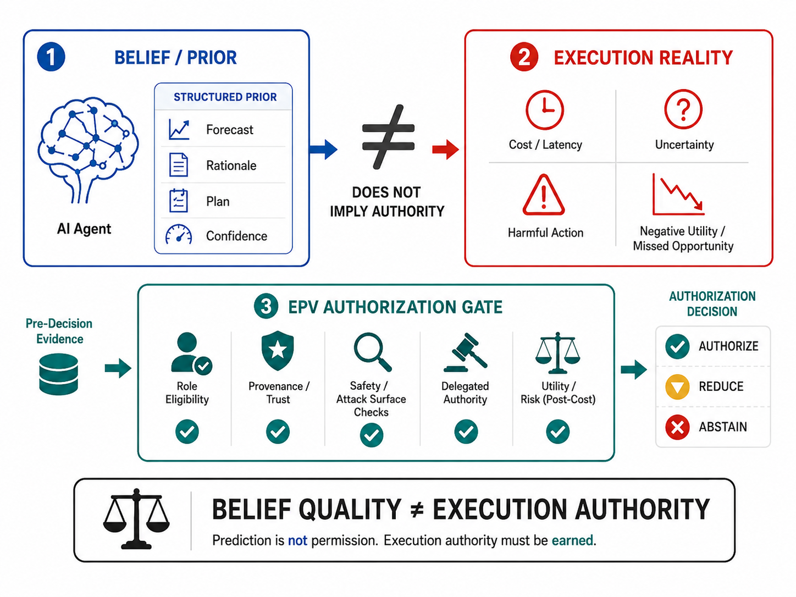
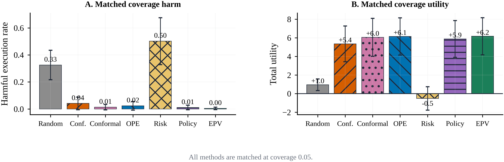

Selection-Induced Authority Risk
Source-level safety does not automatically transfer through scoring, routing, or argmax selection to the final action.
AAAI submission artifact
Statistical Execution Authority for AI Agents
A selected action is not authorized merely because a model can predict it, explain it, or assign it a high score. Statistical Execution Authority certifies the action produced by the complete agent pipeline after eligibility, provenance, selection, and consequence checks.
The paper
Statistical Execution Authority studies when a heterogeneous agent pipeline has enough statistical and provenance evidence to execute its selected action.
Source-level safety does not automatically transfer through scoring, routing, or argmax selection to the final action.
The complete frozen selector is calibrated after selection and routes actions to authorize, review, or abstain.
Global certificates do not erase unsupported task or severity groups. Insufficient local support fails closed to review.
Method at a glance

Evidence snapshot
20
4,000 fresh reset-state episodes and 32,000 registered candidate-plan executions.
0/388
At K=8, split-local EPV-Opt directly authorizes 0.194 of episodes and routes 0.086 to review in the primary snapshot.
V10
The independent AgentDojo holdout does not confirm the pooled certificate. No task-local or high-impact authority is claimed.
Boundary: the positive statistical execution-authority certificate is the sealed reset-state MiniWoB study. AgentDojo adds multi-model and dynamic interaction evidence, but its independent holdout remains negative and is reported as such.
Visual summary
All displayed figures are generated paper artifacts. The repository also contains the vector PDF sources and the full figure audit.



Read online
Use the embedded viewer for a quick read, or download the exact PDF used by the submission package.
Reproducibility
Entry points, experiment lineage, result interpretation, and explicit non-claims.
ManifestFrozen protocols, evidence artifacts, verification commands, and release boundaries.
SourceCode, figures, tables, tests, manifests, and the reproducible build workflow.